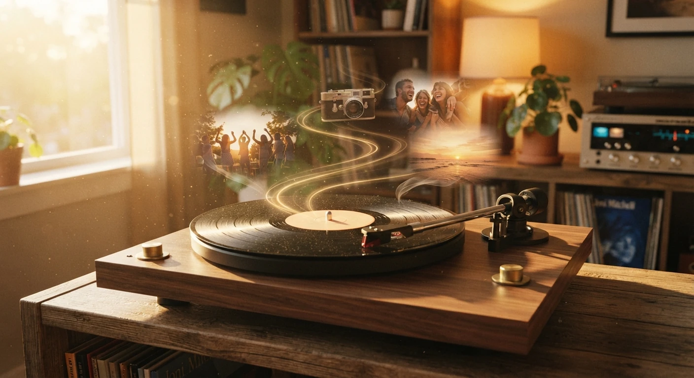
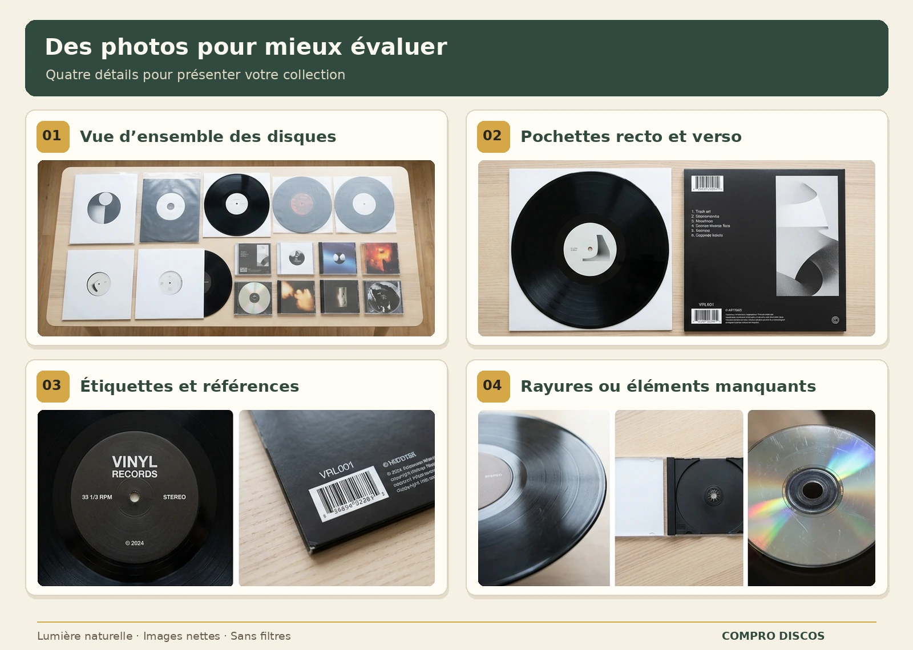

Disques vinyles
Albums, singles et EP. Photographiez pochettes et étiquettes.

Contactez-moi pour convenir d’une estimation. Je me déplace dans la région de Lisbonne, notamment à Cascais, Parede, Carcavelos et Oeiras. Autres lieux à convenir.

Je m’intéresse aux vinyles et aux CD de tous les genres musicaux. Après vérification de leur état et accord sur les conditions, l’achat et le paiement peuvent être conclus sur place.
J’achète des vinyles et des CD pour ma collection personnelle
Vos disques.De nouvelles histoires.La même passion.
J’achète des vinyles et des CD exclusivement pour ma collection personnelle. Envoyez des photos et présentez-moi vos disques.

J’achète desvinyles et des CD
Collectionneur particulier · Estimation juste et rapide

Je suis Paulo Morais, collectionneur de vinyles et de CD depuis plus de 30 ans. J’aime choisir un album, découvrir une pochette et retrouver une chanson qui m’a marqué.
Découvrez mon histoire ↗Albums, singles et EP. Photographiez pochettes et étiquettes.
Précisez artistes, titres et état des boîtiers et livrets.
Envoyez une vue générale et une quantité approximative.
Collectionneur particulier · Paulo Morais


Simple, direct et personnel
Envoyez des photos, la quantité et votre localité.
Si les disques m’intéressent, nous discutons d’une éventuelle offre.
Nous convenons du prix, du paiement et de la livraison avant l’envoi.
Pas pour commencer. Envoyez une vue d’ensemble et des pochettes lisibles.
Oui. Proposez vinyles, CD ou les deux, en indiquant titres et état.
Oui. Le formulaire accepte cinq images JPG, PNG ou WebP maximum, avec 10 Mo au total. Sur WhatsApp, ajoutez-les dans la conversation.
Vous avez des vinyles ou CD que vous n’écoutez plus ? Je suis Paulo Morais et j’achète des disques pour ma collection personnelle. Indiquez les disques à vendre, leur quantité approximative, leur état et votre localité.
Vous pouvez me contacter depuis Cascais, Parede, Carcavelos, Oeiras ou une autre localité de la région de Lisbonne. Le déplacement et les conditions d’un éventuel achat sont convenus directement après une première estimation. Il ne s’agit pas d’un magasin ouvert au public.
Collectionneur particulier · Paulo Morais
Choisissez l’e-mail ou WhatsApp. Une demande ne vous engage pas à vendre et ne garantit pas un achat.